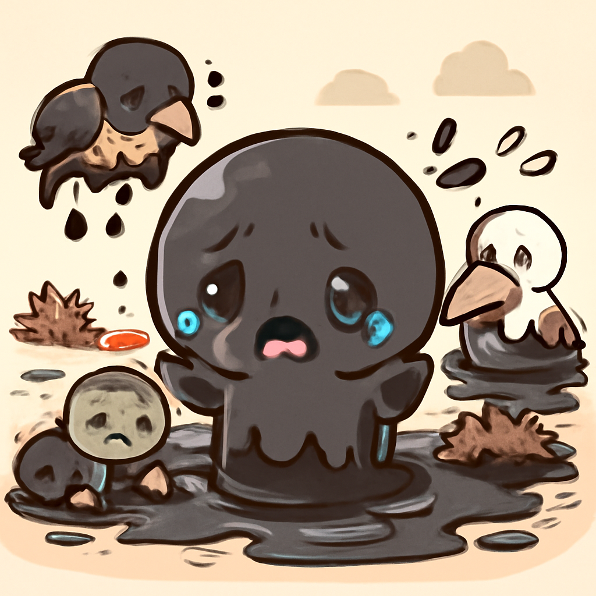

其一 · 剛果（金） · 伊波拉疫情快速擴散
剛果（金）伊波拉疫情懷疑病例激增。
在剛果（金），伊波拉疫情的懷疑病例已超過540例，當地衛生部官員表示，實際人數可能更高。這次疫情讓人心惶惶，尤其是當地民眾對於醫療系統的敏感度也在提高。這樣的情況下，大家可能連上廁所都得三思而後行。
🔗 原始新聞 ↗
2026-05-20 · 以古觀今，以笑抗愁
剛果（金）伊波拉疫情懷疑病例激增。
在剛果（金），伊波拉疫情的懷疑病例已超過540例，當地衛生部官員表示，實際人數可能更高。這次疫情讓人心惶惶，尤其是當地民眾對於醫療系統的敏感度也在提高。這樣的情況下，大家可能連上廁所都得三思而後行。
🔗 原始新聞 ↗
烏克蘭攻擊俄油井，環境危機加劇。

烏克蘭對俄羅斯油井的攻擊正引發一場環境災難。不僅是能源戰，這場戰爭的影響也波及到自然生態，讓人不禁懷疑，誰才是真正的環境破壞者。這樣的情況下，地球上的生物們怕是都要舉白旗了。
🔗 原始新聞 ↗
特朗普威脅對伊朗進行重大攻擊，局勢緊張。
特朗普在華府表示，對伊朗的攻擊可能會很快到來，讓整個中東局勢一觸即發。這樣的緊張局勢讓人忍不住想，這位前總統是不是在玩一場“國際象棋”？不過這棋局可沒那麼簡單！
🔗 原始新聞 ↗
以色列官員威脅驅逐西岸巴勒斯坦人。
以色列官員表示，對巴勒斯坦人進行驅逐的威脅進一步升高，這一言論引發了廣泛的國際關注。這不僅是政治問題，也關乎人道，讓人不禁感慨：在這個地球上，何時才能有和平的曙光？
🔗 原始新聞 ↗
泰國縮短多國訪客免簽停留時限至30天。
泰國決定將90多個國家的免簽停留時間從60天縮短到30天，這對於熱愛旅行的背包客來說，無疑是一個不小的打擊。這樣的改變讓人懷疑，泰國是不是在想：要讓大家旅遊，還是要讓大家回家？
🔗 原始新聞 ↗